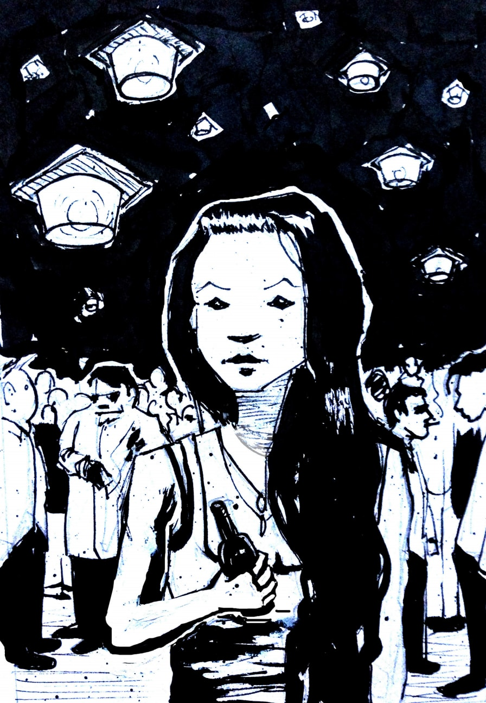

Hi! My name is Ben. Here's my resume and LinkedIn.
I'm a creative technologist. I look for projects that combine imaginative thinking and real-world impact.
Most of my work experience has been on software product teams. But I’ve also designed and built a small house, crafted successful business proposals, and delivered user experiences that blend physical and digital spaces (sometimes leveraging AR and VR). The common thread connecting my pursuits has been collaborative creativity.
I’m a jack of many trades. On product teams, I often fall into an underserved role that helps accelerate outcomes. I’m comfortable working as a user researcher, full-stack developer, or data scientist. I have some pretty strong opinions on quantitative user research, a topic that draws on (and has helped me to develop) all three of those skill sets. Usually my team’s needs, and my deliverables, evolve throughout the product lifecycle (generative research → iterative prototyping → continuous deliverly).
I’ve spent the last few years at IBM Design, creating new products for data storage and analytics. During that time, I've worked across disciplines with designers, developers, and management. Within my teams, I've often found ways to improve cross-discipline workflows and collaboration. I find it fascinating to study the processes though which groups of professionals with different skill sets collectively identify and solve their user's problems!
Before IBM, I studied CS and interactive multimedia at Brown University. My interests include machine learning, the 4th Industrial Revolution, writing, architecture, and sound.
Imaginative Thinking + Real-World Impact
I saw a lantern
Five feet in air
Light in the night
Hovering there
The realists are all boring
The dreamers leave me snoring
They’re grounded so shamelessly
Or float away aimlessly
But when your eyes reflect the moon
You light the sky with shades of blue
Samantha, blue lantern, will you be mine?
I’m the realest one who, like you,
Still knows how to fly
Excerpt from Ch. 3 of The Bell Pepper
Samantha is a metaphor for my interest in creative yet well grounded projects!